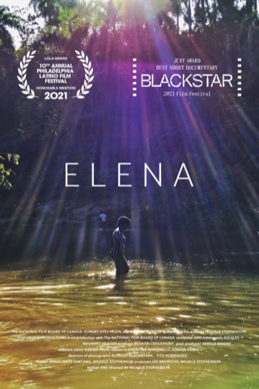

Elena
Directed by Michèle Stephenson
Dominican Republic, Canada, United States · 2021 · 30 min · Short
About the film

Because of their Haitian ancestry, Elena and her family have lost their Dominican citizenship. She must negotiate an opaque bureaucracy in a racist, hostile society, or else remain stateless in a country intent on deporting its darker-skinned citizens.
Elena
is featured in Short Cuts Program #2.
Michèle Stephenson
RESERVE A FREE TICKET
At the festival
More films on these topics
 A Month in MinnesotaAnnie Sundberg2026 · 40 min
A Month in MinnesotaAnnie Sundberg2026 · 40 min- Short Strand: Minneapolis: On the Record + A Special ScreeningLaura Poitras, Rachel Lauren Mueller · Anne Sundberg · Yoruba Richen, Christalyn Hampton2026
- They're HereThey’re Here2026 · 25 min
 No se ve desde acá (You Can't See It From Here)Enrique Pedráza-Botero2025 · 20 min
No se ve desde acá (You Can't See It From Here)Enrique Pedráza-Botero2025 · 20 min Status: VenezuelanMauricio Rodriguez-Pons2025 · 35 min
Status: VenezuelanMauricio Rodriguez-Pons2025 · 35 min Relentless MemoryPaula Rodriguez Sickert2024 · 93 min
Relentless MemoryPaula Rodriguez Sickert2024 · 93 min